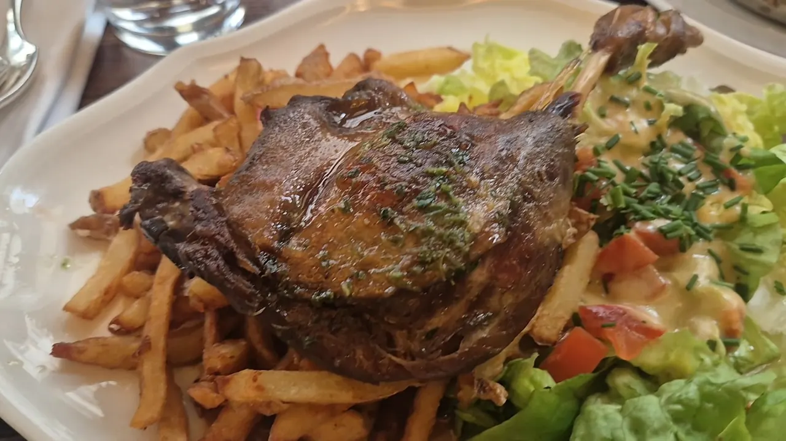

식당·카페 P0
Une table pour deux, s'il vous plaît.
두 명 자리 부탁합니다.
윈 타블 푸르 되 실 부 플레

카페 바렌은 총리 관저 마티뇽이 있는 7구 rue de Varenne의 동네 비스트로다. 관공서와 대사관이 몰린 동네라 점심때는 정장 차림 손님으로 붐비지만, 회전이 빨라 오래 기다리는 일은 드물다.
붉은 벨벳 벤치와 다크우드 패널, 빈티지 포스터, 흑백 유니폼의 서버 — 관광 안내서에 실리는 '파리 비스트로'의 이미지가 연출이 아니라 그냥 일상으로 굴러가는 곳이다.
이 슬롯에서 이 집을 고른 이유는 두 가지다. 첫째, 논스톱 영업이라 오르세 관람이 예정보다 길어져도 따뜻한 점심을 먹을 수 있다. 둘째, 로댕 미술관과 같은 길 위에 있어 식후 8분 직진이면 도착한다.
이 슬롯의 진짜 위험은 맛이 아니라 시간이다. 오르세 관람이 밀리면 14:00에 주방을 닫는 비스트로는 전부 실패한다. 여기는 논스톱 영업이라 그 사고가 구조적으로 일어나지 않고, 식후 rue de Varenne를 8분 직진하면 로댕 미술관이다. 길을 잃을 여지가 없다.
| 운영시간 | 월–금 07:30–23:00 · 토 09:00–23:00 (논스톱 영업) |
|---|---|
| 휴무 | 매주 일요일 |
| 가격대 | 1인 €20~€30 (대형 샐러드 €23~€25 · 스테이크 약 €28) |
| 예약 | 전화 +33 1 45 48 62 72. 워크인 대기도 통상 5~10분 |
| 소요시간 | 45~60분 재확인 |
| 항목 | 상세 정보 |
|---|---|
| 위치 | 36 rue de Varenne, 75007 Paris, France |
| 운영 시간 | 월–금 07:30–23:00 · 토 09:00–23:00 (논스톱 영업) |
| 정기 휴무 | 매주 일요일 |
| 가격대 | 1인 €20~€30 (대형 샐러드 €23~€25 · 스테이크 약 €28) — 공식 카르트 정가를 확보하지 못했다 — 현장 확인 |
| 예약 | 전화 +33 1 45 48 62 72. 워크인 대기도 통상 5~10분 |
| 접근 교통 | 메트로 12호선 Rue du Bac역 도보 5분 (오르세 도보 10분 · 로댕 미술관 도보 8분) |
| 공식 정보 | 공식 웹사이트 없음 — 전화 확인 (verified_at: 2026-08-25) |
운영시간·요금은 2026-08-25 웹 조사 기준이다. 프랑스 식당은 연차 휴무와 단축 영업이 잦으니 방문 3~7일 전 전화로 재확인한다.
파리 비스트로 대부분은 점심 서비스를 12:00에 열어 14:00 또는 14:30에 주방을 닫는다. 오르세 미술관을 3.5시간 집중 관람하는 날에 13:00 착석을 전제로 계획을 짜면, 관람이 20분만 밀려도 '문은 열려 있는데 주방이 닫혔다'는 상황을 만난다. 이 집은 아침부터 밤까지 끊기지 않아 그 실패 지점이 없다. 평균 체류 시간이 45분이라 75분 슬롯에 압박도 없다.
La Laiterie Sainte Clotilde (64 rue de Bellechasse, 75007 · 오르세 도보 9분 / 로댕 도보 5분 · 월–토 12:00–14:00 · 셰프 Nicolas Radet · 고미요 12/20 · +33 1 45 51 74 61) — 1950년대에서 시간이 멈춘 옛 유제품 가게를 개조한 곳으로 음식 완성도는 이 권역 최상이다. 동선도 거의 완벽하다. 다만 부처 밀집 지역이라 화요일 13시 만석 위험이 크고, 점심 마감이 14:00일 수 있어 14:15까지 머무는 것은 빠듯하다. 점심 전용 코스가 없어 예산을 지키려면 플라 1개 + 커피로 간다. 트러플 즙을 두른 농가 닭가슴살(€26), 파르메산 크럼블 달걀 마요네즈(€10)가 대표.
L'Affable (10 rue de Saint-Simon, 75007 · 양쪽 도보 8~10분 · 점심 코스 €26~€29 · +33 1 42 22 01 60) — 오르세와 로댕의 정확한 중간. 2인 3코스가 예산 안에 들어오는 유일한 선택이다. 다만 비스트로 시크 성향이라 서빙 템포가 느려 75분이 빠듯하고, 주간 휴무일 정보가 출처마다 어긋난다(화요일 영업만 확실).
Une table pour deux, s'il vous plaît.
두 명 자리 부탁합니다.
윈 타블 푸르 되 실 부 플레
Une carafe d'eau, s'il vous plaît.
수돗물 한 병 부탁합니다.
윈 카라프 도 실 부 플레
L'addition, s'il vous plaît.
계산서 부탁합니다.
라디시옹 실 부 플레

1868년 앙리 라브루스트가 주철 기둥과 9개 도자기 돔으로 완성한 19세기 건축의 걸작 '라브루스트 열람실'과 일반에 전면 무료 개방된 거대한 타원형 '오발 열람실(Salle Ovale)', 프랑스 국립도서관 박물관.

18세기 원형 곡물거래소를 세계적인 건축가 안도 다다오가 노출 콘크리트 원통 실린더로 리노베이션한 현대미술관. 프랑수아 피노 회장의 세계적 현대미술 컬렉션과 1889년 돔 천장 무역 파노라마 프레스코화.

렌조 피아노와 리처드 로저스가 건물 배관과 골격을 외벽으로 노출시킨 20세기 하이테크 건축의 전설이자 유럽 최대 근현대미술관. ⚠ 2025년 가을부터 2030년까지 전면 개보수 공사로 본관 폐관 중.

클로드 모네가 43년간 직접 꽃과 연못을 가꾸며 불후의 『수련』 대작을 창조해낸 살아있는 인상파 캔버스. 초록색 일본식 다리가 걸린 '물의 정원(Jardin d'eau)'과 핑크빛 모네 생가 아틀리에.

1900년 파리 만국박람회를 위해 건립된 45m 높이 아르누보 철골 유리 네이브(Nave)의 기념비적 국립 전시장. 2024 파리 올림픽을 거쳐 리노베이션 완료 후 재개관한 파리 문화 예술의 중심지.

중세 소르본 대학 교수와 학생들이 공용어로 라틴어를 쓰던 데서 유래한 800년 파리 지성의 요람이자 센 강 좌안(Rive Gauche)의 심장. 프랑스 위인들의 성소 팡테옹(Panthéon), 셰익스피어 앤 컴퍼니, 뤽상부르 공원.